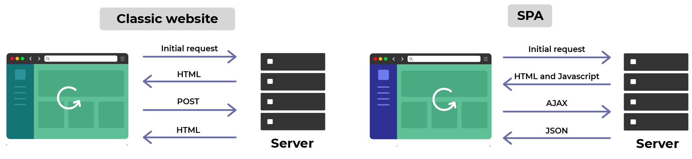
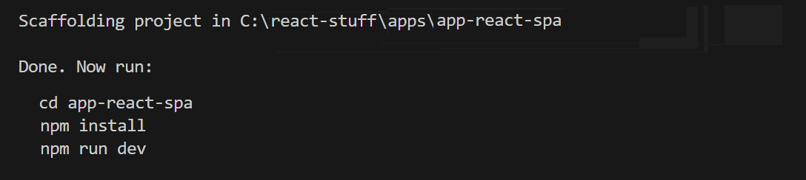
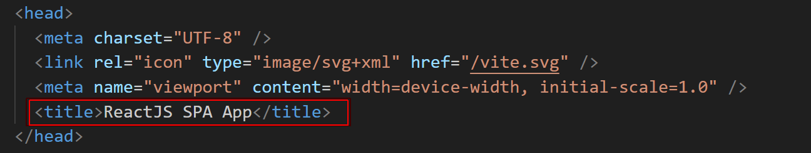
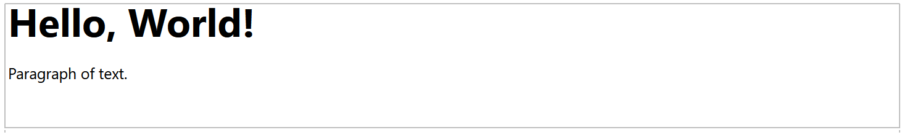
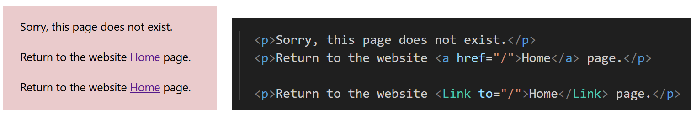
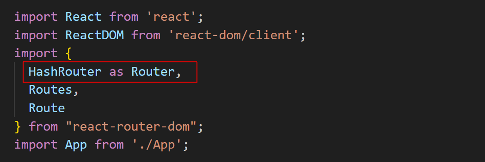

Learning Goals
At the end of this Tutorial, you will be able to:
- Create and deploy a Single Page Application (SPA) with fixed navbar and footer components.
About Single Page (SPA) Applications
In a traditional multi-page website, each page is a different HTML file. Navigating to different pages causes a full page reload, fetching a new HTML document from the server. This is called Server-Side Rendering (SSR). Content is typically rendered on the server, and the complete HTML is sent to the client.
In contrast, a React app dynamically updates the current page rather than loading entire new pages from the server. Content is loaded once, and new data is retrieved as needed without page reloads.
This is called Client-Side Rendering (CSR). The server sends a single HTML page initially, and the content is then rendered on the client side using JavaScript. Such apps are known as Single Page Applications or SPAs.
Scaffolding with Vite
Follow these steps to scaffold your app structure with Vite.
- In a terminal, navigate to where you want Vite to create a folder for your app.
C:\> react\apps
- Enter the following command that includes the name you want to call your new app. For example, app-react-spa.
npm create vite@latest app-react-spa -- --template react
Follow the on-screen instructions to build and launch your new app. 
Customising your app content
Next, customise the 'boilerplate' content provided by Vite.
- Download the following stylesheet and save it to your app's /src folder. Petite.css
- Open the index.html file in your main app folder and replace the <title> tag content as shown below. 
- In your /src folder, open the main.jsx file and update it as follows.

- Also in your /src folder, open App.jsx and replace all its content with the content below.
import './Petite.css' function App() { return ( <> <h1>Hello, World!</h1> <p>Paragraph of text.</p> </> ); } export default App;
In a browser your app's default web page should now look as shown below.
Installing react-router-dom
ReactJS does not natively support page routing. So you need to install the following package in your root app folder.
npm i react-router-dom
Downloading ‘page’ components
Each ‘page’ in your SPA will be a component file, stored in a /pages sub-folder of your /src folder. Follow these steps
- In your /src folder, create a sub-folder named /pages.
- Download these page components to this sub-folder:
Home.jsx
Products.jsx
Contact.jsx
PageNotFound.jsx
Updating your main.jsx file
Here are the steps to add routes for your four 'pages'.
- Near the top of your main.jsx file, after the first two import statements, add one more:
Developers often shorten the name of the BrowserRouter function with the Router alias. Also, you may find multi-line syntax easier to read. See below:import { BrowserRouter, Routes, Route } from "react-router-dom";import { BrowserRouter as Router, Routes, Route } from "react-router-dom"; - Inside the <React.StrictMode> tag pair, update the <App /> component with the following code:
App.jsx will now act as a layout component that wraps around all the 'pages' in the entire application.<Router> <Routes> {/* App component wraps around all the 'pages'. */} <Route path="*" element={<App />} /> </Routes> </Router>
Here is a summary of what these three imported named functions do:
BrowserRouter |
Provides the routing functionality for your app. |
Routes |
Defines the routes for your app. |
Route |
Defines a single route. |
Adding routes to your app.jsx file
Now, update app.jsx as follows:
- Begin by importing your four 'page' components:
import Home from './pages/Home'; import Products from './pages/Products'; import Contact from './pages/Contact'; import PageNotFound from './pages/PageNotFound'; - Next, import these two functions from react-router-dom:
import { Routes, Route } from 'react-router-dom'; - Finally, update your <App> component as shown below. Each Route now has a path and an element prop:
function App() { return ( <Routes> {/* Use Home component for the root path */} <Route index element={<Home />} /> <Route path="products" element={<Products />} /> <Route path="contact" element={<Contact />} /> <Route path="*" element={<PageNotFound />} /> </Routes> ); }
Verifying your app’s URL paths
In your web browser, verify your four web pages display correctly by entering the following URLs:
- http://localhost:5173
- http://localhost:5173/products
- http://localhost:5173/contact
- http://localhost:5173/abcd1234
Each should display the content of the corresponding page component.
Hyperlinks and SPAs
The HTML <a> tag enables hyperlinks between web pages, whether the destination web page is on the same or a different website. For example:
<a href="page-4.html">Page 4</a>Clicking/tapping a regular HTML hyperlink such as the above loads the entire web page file from the web server. This is an example of server-side rendering (SSR).
From hyperlinks within an SPA, ReactJS offers the <Link /> component that navigates between page components without accessing the server. This is called client-side rendering (CSR).
For example:
import { Link } from 'react-router-dom';
// Changes the component being rendered without reloading the page file
<Link to="/products">View our Products</Link>In the PageNotFound.jsx page component, you can see two hyperlinks: an HTML link and a ReactJS component link.
Note how the ReactJS link loads much faster, and without a screen flicker.
Update all the HTML links in your app to ReactJS links. You will need to import this statement in all components using the <Link /> component.
import { Link } from 'react-router-dom';When finished, deploy your app to GitHub and GitHub Pages.
The HashRouter hack
After you deploy your SPA to GitHub Pages, you can see that reloading any route other than the Home page displays a blank web page.
This is because GitHub Pages does not support the React BrowserRouter for client-side routing, which relies on the History API.
A common workaround is to instead use the HashRouter from react-router-dom.
Here are the steps:
- In your main.jsx file, import HashRouter instead of BrowserRouter: 
- In your app root folder, create a custom 404.html file with a JavaScript snippet that redirects the user to the main application served from the root (/).
<!DOCTYPE html> <html lang="en"> <head> <meta charset="UTF-8"> <title>404 Not Found</title> </head> <body> <h1>Page Not Found</h1> <script> window.location.href = "/"; </script> </body> </html> - Re-build your app and deploy it to GitHub Pages.
Note that, for your deployed app, the page routes are prefaced with the hash # character. For example:
https://username.github.io/app-react-spa/#/products
https://username.github.io/app-react-spa/#/contact